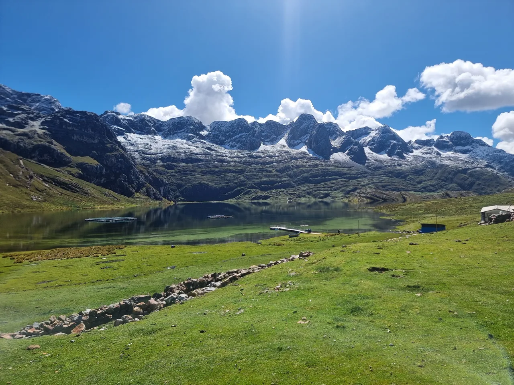
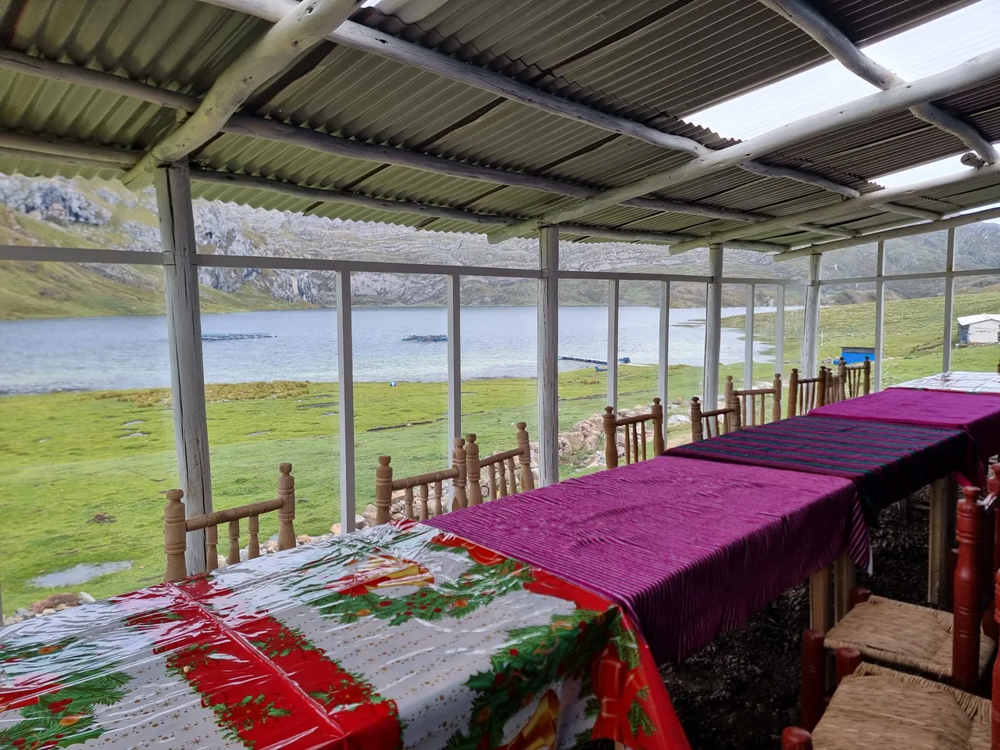
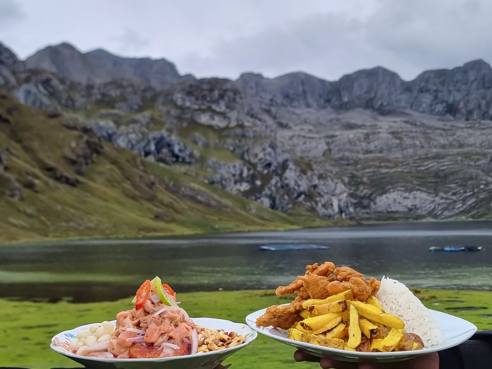
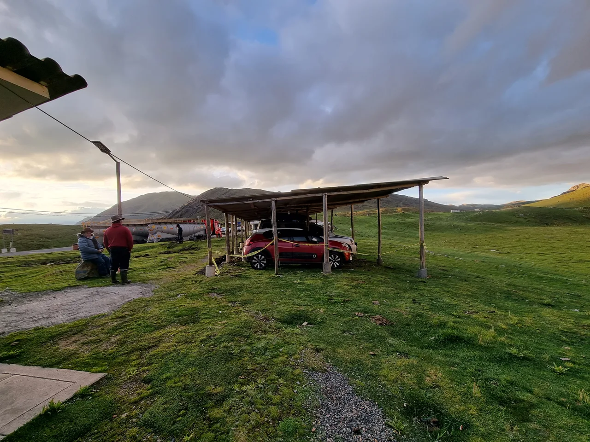
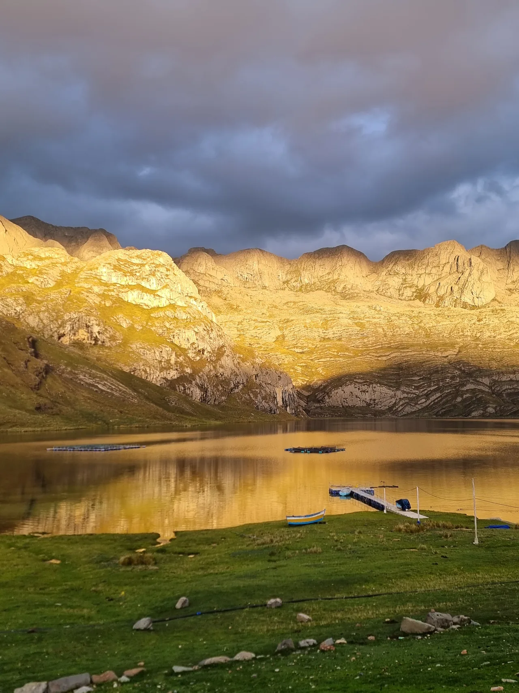

Huellas de dinosaurio
Restos fósiles visibles a lo largo del camino, un viaje al pasado prehistórico.

SAN MARCOS · ÁNCASH · PERÚ
La laguna frente a ti. Trucha de nuestra crianza en tu mesa. Y tiempo para disfrutar de los Andes.
Tu viaje, sin sorpresas
Llegas en auto hasta el restaurante por carretera asfaltada. Estos tiempos son aproximados.
Si partes de San Marcos, Google Maps puede mostrarte dos rutas. Elige aquí «San Marcos» para abrir la ruta recomendada.
Muchos visitantes nos preguntan si la carretera tiene asfalto o si habrá que caminar un tramo — sobre todo quienes viajan con niños, les afecta la altura o temen por su vehículo. Hoy la ruta está en excelentes condiciones: de Huaraz a Conococha el tramo lo mantiene el Estado peruano, y de Conococha hasta la laguna lo cuida Antamina. Llegas en auto directo al restaurante; en ningún momento tendrás que caminar por falta de camino.
El viaje es parte de la experiencia
Restos fósiles visibles a lo largo del camino, un viaje al pasado prehistórico.

Avistamiento de flamencos rosados en la laguna Conococha, rumbo a Canrash.

Cordillera nevada que acompaña el recorrido con panoramas de postal.

Formación rocosa con perfil de cara de gorila, parada obligatoria para la foto.
La ruta bordea la laguna, pasa buses de trabajadores y regala vistas que no se olvidan. Llegar a Canrash ya es parte de la experiencia.
Una experiencia completa
Canrash reúne alta montaña, trucha criada en la propia laguna, comida honesta y un lugar sencillo donde descansar.

Origen y cocina
Criamos trucha arcoíris en la propia laguna. La preparamos frita, en chicharrón, ceviche y sudado, para disfrutarla en nuestro restaurante rústico.
También encontrarás platos de pollo y res, y tres ambientes para compartir.
Ver nuestra cartaEl origen y los sabores de nuestra cocina

Textura crujiente, sabor intenso

Frescura marina en altura

Caldo aromático y reconfortante

Comedor interno — casa de adobe con poca vista al exterior; aquí funciona también la tiendita (agua, cerveza, galletas).

Comedor vista carretera — junto a la carretera, cerrado para resguardarse del viento; más vista a la pista que a la laguna.

Comedor vista laguna — pared transparente con vista total a la laguna (un plástico resistente que simula vidrio, instalado con ingenio y poco presupuesto).
Experiencia
Nuestro muelle es un rincón querido: familias, viajeros y trabajadores de la zona se toman aquí sus mejores fotos. Por falta de personal, costos y seguridad, no ofrecemos paseos en bote.


Hospedaje y servicios
Un lugar sencillo para descansar y dejar tu vehículo. Consulta disponibilidad antes de venir.
Habitaciones en módulos de madera y acogedoras casitas de adobe. Pensado para transportistas de ruta y personal de empresas de la zona.
S/ 30
por noche
Ambiente tranquilo, cálido y rodeado de paisaje andino — con la misma vigilancia que el resto de instalaciones.

Cochera seguraIdeal para trabajadores de Antamina que dejan sus vehículos por 10 días o más. Espacios cubiertos con techo y estacionamiento amplio al aire libre.
Wi-Fi gratuito y continuo para quienes nos visitan, gracias a Starlink.
Contamos con cámaras de seguridad en todo el recinto y respaldo de la central de la PNP vinculada a Antamina. Restaurante, cochera, hospedaje, estacionamiento y áreas de trabajo están bajo la misma vigilancia.

Experiencia nocturnaA más de 4 000 m, el cielo de Laguna Canrash es ideal para observar estrellas, la Luna y los planetas. Consulta nuestra guía del cielo con fases lunares, mapa estelar y qué ver cada noche.
Ver guía del cieloReseñas destacadas · Google Maps
La trucha, el paisaje y esos momentos junto a la laguna, en palabras de quienes nos visitaron.
★★★★★
“Trucha frita ..una delicia..”
wilmer johnny chavez suyon
Google Maps
★★★★★
“Un buen lugar para comer trucha y tomarse unas fotos…”
Raul Zevallos
Google Maps
★★★★★
“Lugar bonito para estar en contacto con la naturaleza…”
Nilton Huashuayo Pérez
Google Maps
Fragmentos de reseñas del Restaurante Laguna Canrash, en su idioma original. Lee las opiniones completas en Google Maps.
Legado familiar
Somos una familia que lleva décadas en estas tierras. En los años 70, nuestro abuelo compró los campos alrededor de la laguna para pastorear ovejas y vacas. De ese trabajo sencillo nació el amor por este lugar.
Somos una familia que lleva décadas en estas tierras. En los años 70, nuestro abuelo compró los campos alrededor de la laguna para pastorear ovejas y vacas, cuando este rincón de los Andes peruanos casi no tenía valor. De ese trabajo sencillo nació el amor por este lugar.
El hijo de aquel pastor se había formado ya como ingeniero agrícola en la UNAM — por sus propios esfuerzos, mucho antes de que llegara Antamina — y soñaba con llevar la laguna un paso más allá: criar trucha arcoíris en jaulas flotantes, con sus propias manos y estudio. En el año 2000 la carretera hacia la mina pasó muy cerca y el paisaje cambió para siempre. Hubo robos, engaños y noches difíciles, pero no soltó el sueño.
Hoy las ovejas siguen en el paisaje, como herencia viva de nuestro abuelo. La ganadería ya no es el sustento principal desde los años 90, pero cuida la tierra y a las familias de pastores que colaboran con nosotros. Nuestro abuelo defendió esta laguna cuando pocos lo harían; ese orgullo familiar sigue presente en cada rincón.
Vivir tan alejados del pueblo nos obligó a inventarlo todo: agua, desagüe, luz con paneles solares. En 2023 llegó Starlink y por fin tuvimos internet estable en plena altura. En 2025 ganamos el Procompite de San Marcos y pudimos mejorar los ambientes del restaurante, cerrar el salón contra el viento y ampliar la vista panorámica a la laguna.
Hoy somos hermanos y familia trabajando juntos. Te recibimos como llegamos a recibir a transportistas, mineros y viajeros de todas partes: con un plato caliente, trucha fresca y la calidez de quien sabe lo que es vivir en altura.
2023
Internet en la laguna
Llegó Starlink: conexión estable y Wi‑Fi gratuito para quienes nos visitan.
2025
Procompite San Marcos
Ganamos el fondo distrital y pudimos crecer: mejores ambientes, más comodidad para quien nos visita.
Momentos reales
Explora la laguna, la comida, quienes nos visitan y el camino hasta Canrash. Toca una foto para verla en grande.
Distribución
Trucha arcoíris fresca, fileteada o entera, directamente del criadero. Precios escalonados según volumen para restaurantes, distribuidores y negocios de la región. Toda la operación cuenta con cámaras de seguridad y respaldo de la central PNP vinculada a Antamina.

Según volumen total de compra
Menor a 5 kg
Compra pequeña
22 soles/kg
De 5 a 10 kg
Volumen medio
21 soles/kg
De 10 a 25 kg
Restaurantes y negocios
20 soles/kg
Mayor a 25 kg Mejor precio
Distribuidores y alto volumen
19 soles/kg
ANTES DE VENIR
Cuéntanos cuándo quieres visitarnos. Te ayudamos a coordinar tu comida, hospedaje o estacionamiento.
957 878 409WhatsApp directoAtención todos los días · 7 a.m. a 7 p.m.
Laguna, trucha y descanso en los Andes de Áncash.
Distrito de San Marcos, provincia de Huari,
departamento de Áncash, Perú.